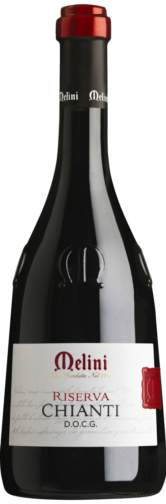

Винный магазин Геофизика
Melini, Chianti Riserva DOCG, 2011
Описание вина
|

|
|
Год:
|
2011
|
|
Страна происхождения:
|
Италия, Тоскана, Кьянти
|
|
Тип вина:
|
Красное сухое
|
|
Цена за бутылку:
|
972 рублей
|
Подробное описание товара
Для производства вина Melini, Chianti Riserva используются только самые зрелые ягоды Санджовезе и других красных сортов. Криомацерация длится 3-4 дня, затем проводится ферментация при строго контролируемой температуре 26-28°C с частым ремонтажем. После яблочно-молочного брожения, вино выдерживают в бочках из французского дуба в течение 18 месяцев. Потенциал хранения вина составляет 5 лет.
Винный дом Мелини был основан в 1705 году на окраине Флоренции, в деревеньке Понтассиеве. Вина Мелини сразу приобрели известность благодаря высокому качеству, но до середины XIX века они поставлялись только на внутренний рынок, пока в 1865 году Альфредо Лаборель Мелини не создал плетеную соломенную облатку для бутылки, что позволило безопасно транспортировать вина за рубеж. В 1877 году Торговая Палата Флоренции наградила Дом Мелини дипломом и Золотой медалью за освоение и укрепление обширных рынков тосканских вин за рубежом. Дом Мелини подтвердил свою отличную репутацию, и по сей день производит одни из самых продаваемых вин в мире. В начале XX века Мелини расширили свои владения и приобрели около 200 гектар виноградников в районе Кьянти Классико, а также построили новую винодельню в Гаджиано ди Поджибонси, где остаются и по сей день. Мелини входит в состав GRUPPO ITALIANO VINI ("Группа Итальянских Вин").
© Все права защищены. Минздрав предупреждал уже много раз! Хватит пить! Идите учиться уже...